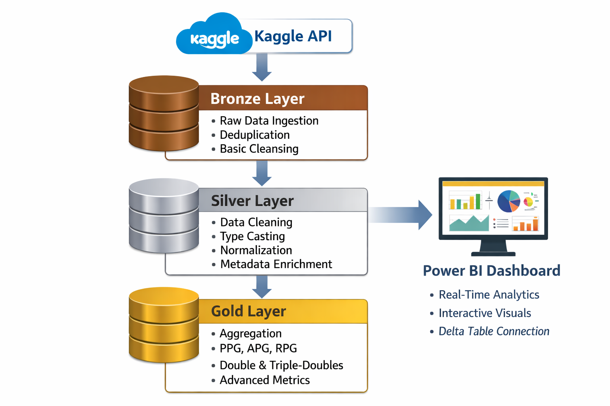
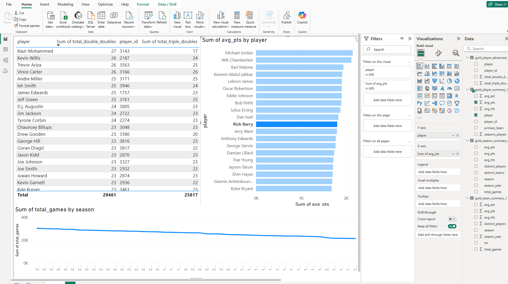

Project Overview
This project implements a fully automated, end-to-end data pipeline for analyzing NBA player performance. Built on Microsoft Databricks using Apache Spark, the pipeline follows the medallion architecture (Bronze, Silver, Gold) and produces analytics-ready datasets that power interactive Power BI dashboards.
The focus of the project was on scalable data processing, data quality, automation, and clear separation of responsibilities across pipeline layers.
Pipeline Architecture
The system follows a layered medallion architecture, where raw data is incrementally refined into high-quality analytical datasets.
Pipeline Layers
Bronze Layer – Data Ingestion
The ingestion process is fully automated using the Kaggle API to programmatically fetch the
NBA/ABA/BAA Historical Statistics
dataset. Link from: https://www.kaggle.com/datasets/sumitrodatta.
Raw files are ingested into Databricks as Spark DataFrames. The Bronze layer preserves the original structure of the source data, acting as an immutable "Landing Zone" that allows for full traceability and historical reprocessing.
Silver Layer – Data Cleaning & Transformation
The Silver layer cleans and standardizes the raw data. Key transformations include removing duplicates, handling null values, and normalizing identifiers across multiple seasons. Data is cast into appropriate numeric types, and technical metadata (such as transformation timestamps) is added to ensure robust data lineage.
Gold Layer – Analytics & Aggregation
In the Gold layer, the data is refined into high-value analytical tables. We calculate complex aggregations such as Points Per Game (PPG), Assists Per Game (APG), and advanced metrics like Double-Doubles and Triple-Doubles. These datasets are highly optimized for high-performance consumption by the JavaScript Dashboard and Power BI.
Design Decisions & Engineering Considerations
- Apache Spark was chosen for scalable processing and future extensibility.
- Medallion architecture enables data quality enforcement and clear data lineage.
- Aggregations are isolated in the Gold layer to avoid recomputation.
- Batch processing was selected over streaming due to dataset characteristics.
- Delta tables enable reliable Power BI integration.
Data Quality & Validation
Multiple data quality checks were implemented throughout the pipeline to ensure reliable analytical results:
- Deduplication of player records
- Safe casting of numeric fields
- Filtering of invalid or incomplete rows
- Row count logging at each pipeline stage
Results & Advanced Analytics
The final stage of the Medallion Pipeline transforms raw player data into highly optimized Gold-tier datasets. To ensure high-performance rendering for the front-end, the processed .csv outputs from Databricks were converted into lightweight .json structures.
This language choice allows the JavaScript-driven dashboard to fetch and visualize complex player metrics—like triple-double trends and league-wide averages—instantly without server-side lag.
Interactive NBA Analytics Dashboard
Integrated View: Interactive Chart.js visuals powered by the Gold-layer JSON data.
Pipeline Validation & Data Quality Checks
Before the data is exported for the web or external BI tools, I implemented a validation step within the Databricks notebook. Using Matplotlib and Seaborn, the pipeline generates the following internal visuals to ensure the Gold Layer aggregations match the expected distribution and statistical accuracy.

Power BI Dashboard
The final Gold-layer tables are persisted as Delta tables and connected directly to Power BI, enabling interactive dashboards and real-time analytical exploration.
Data Outputs
The pipeline produces analytics-ready CSV datasets that can be used for further analysis or visualization.
Limitations & Future Improvements
- Support incremental loads and streaming ingestion
- Add automated data validation tests
- Implement CI/CD for pipeline deployments
- Extend analytics to include advanced efficiency metrics
Academic Note
Due to academic ownership and infrastructure restrictions, the Databricks workspace and source code are private. This page documents the system design, methodology, and outputs of the project.